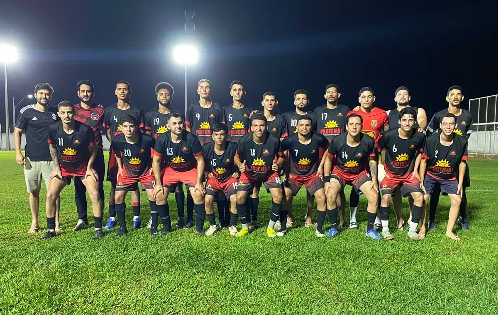

Goleada e classificação: Camargo FC vence o Nova Geração por 6 a 2
Com quatro gols de André, um de Ariostocly e um de Clovis Henrique, o Camargo FC venceu a Associação Esportiva Nova Geração por 6 a 2 e garantiu sua vaga na semifinal da competição.
 Camargo FC
Camargo FC Nova Geração
Nova GeraçãoO jogo
Camargo na frente. A equipe abriu o placar com um golaço de falta de André. Ainda no primeiro tempo, o camisa 9 voltou a marcar e levou o Camargo para o intervalo com vantagem de dois gols.
Susto após o intervalo. O time voltou desligado e sofreu um gol logo aos três minutos da segunda etapa. Aos dez, Chico — capitão e pendurado com dois cartões amarelos — deixou o campo para a entrada de Caio, preservando o atleta para a semifinal.
Controle e velocidade. O Camargo retomou o comando da partida e foi letal nos contra-ataques: André marcou o terceiro e Ariostocly fez o quarto aos 20 minutos.
Mudança para o 4-4-2. Após a parada técnica, Gabriel Tolintino entrou no lugar de Yokida e Carlos Henrique substituiu Michael Davi. Fabiano recuou da ponta para a lateral direita, reorganizando a equipe no 4-4-2.
Novas alterações. Aos 30 minutos, Fabiano sentiu uma lesão. Na mesma janela, Leomar Loiola entrou na vaga de Daniel Mota, que também estava pendurado, e Clovis Henrique substituiu Fabiano. O time voltou ao 4-3-3, com Ariostocly recuado para a lateral.
Gol para fechar a conta. Na reta final, o Camargo explorou os espaços: André marcou o quinto — seu quarto gol na noite — e Clovis Henrique fechou o placar em 6 a 2 com um belo gol, driblando o goleiro antes de mandar para a rede.
Escalação do Camargo FC
Titulares
- 12 José Ribamar Jr
- 2 Michael Davi
- 4 Daniel Mota
- 5 David Novaes
- 6 Guilherme
- 8 João Marcelo
- 10 Chico (capitão)
- 11 Ariostocly
- 7 Fabiano
- 17 Yokida
- 9 André
Substituições
- 20 Caio por 10 Chico
- 19 Gabriel Tolintino por 17 Yokida
- 15 Carlos Henrique por 2 Michael Davi
- 18 Clovis Henrique por 7 Fabiano
- 13 Leomar Loiola por 4 Daniel Mota
Próximo desafio: o Camargo FC volta a campo pela semifinal no dia 27 de setembro, às 17h30, no Antônio Damião. O adversário sairá do confronto entre Atlético Paraisense e Real Tocantins.